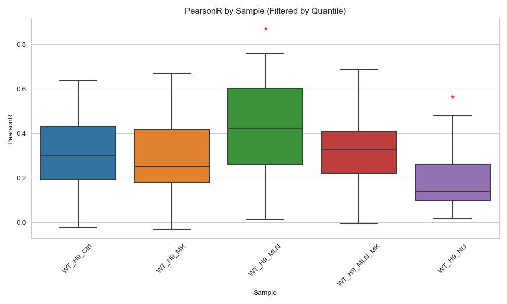

Nuclear_Colocalization
Kevin Boyd
05/19/2025

Pixel Intensity Distributions & Colocalization Results
This pipeline performs segmentation of nuclei, quantification of PCNA-GFP colocalization, and statistical comparisons across multiple sample conditions. Results include correlation metrics, pixel distributions, annotated visualizations, and representative nucleus overlays.

Image Analysis Methods
This Python-based image processing workflow is used to quantify
nuclear segmentation, colocalization, and statistical comparisons across
multiple samples. Load the .czi files using
AICSImage (v4.4.0) [1], which provides
channel-separated arrays for the nuclear (channel 0), PCNA (channel 1),
and GFP (channel 2) signals. Images are blurred with a Gaussian filter
(σ=1.0) and thresholded using threshold_otsu to generate
binary nuclear masks [2]. Small objects and holes are removed using
morphological operations from scikit-image (v0.19.3)
[3]. Each labeled nucleus is analyzed with regionprops to
extract pixel intensities for downstream colocalization
calculations.
PearsonR and Manders’ coefficients (M1, M2) are computed for PCNA vs. GFP intensities. Aggregate results are stored in a combined CSV file that included nucleus IDs, sample names, and image filenames. Statistical analyses (ANOVA, Tukey HSD) and plotting are performed in Python using statsmodels (v0.14) [4], seaborn (v0.12.2) [5], and matplotlib (v3.6.3) [6]. Boxplots and histograms of the correlation metrics are created to visualize distribution differences among sample groups. Additional pixel-intensity boxplots (Nuclear, PCNA, GFP) are generated to assess signal variance by sample.
For selected low and high correlation nuclei, overlay images are
produced by normalizing each channel and assigning PCNA to
red, GFP to green, and nuclear signal
to grayscale, allowing for qualitative visualization of
colocalization. Multipage TIFF outputs are saved using
tifffile (v2023.7.18) [7], containing individual
grayscale channels alongside the merged overlay. All code and data are
organized in a reproducible directory structure with final results (CSV
files, plots, and TIFFs) placed in a designated results
directory.
Folder Structure
wt_czi_images/— Root input folder with subfolders per sample (e.g.,WT_H9_Ctrl/,WT_H9_MK/)results_wt/— Output directory where all processed results, plots, and summary files are saved
Sample Conditions
WT_H9_CtrlWT_H9_MKWT_H9_MLNWT_H9_MLN_MKWT_H9_NU
Processing Workflow
- Loads .czi images using AICSImageIO
- Extracts 3-channel image stacks:
- Channel 0: DAPI (nuclear)
- Channel 1: PCNA
- Channel 2: GFP
- Nuclear segmentation with Gaussian blur, Otsu thresholding, and morphological cleaning
- Quantifies colocalization metrics for each nucleus:
- Pearson correlation
- Manders M1 and M2 coefficients
- Saves nucleus-level results in:
results_wt/combined_coloc_results.csv
Generated Visualizations
- Pixel Intensity Boxplots:
- Nuclear →
nuclear_pixel_boxplot.png - PCNA →
pcna_pixel_boxplot.png - GFP →
gfp_pixel_boxplot.png
- Nuclear →
- Colocalization Metrics Boxplots with Stripplots:
- Pearson →
pearson_boxplot.png - Manders M1 →
mandersM1_boxplot.png - Manders M2 →
mandersM2_boxplot.png
- Pearson →
- Histograms:
pearsonr_histograms.pngmandersm1_histograms.pngmandersm2_histograms.png
- ANOVA Boxplots with Asterisk Annotations: 


Representative Nucleus TIFFs
- For each sample, the top 3 and bottom 3 nuclei by PearsonR are saved
as multipage TIFFs containing:
- Grayscale: DAPI, PCNA, GFP
- RGB overlay
- Example outputs:
WT_H9_Ctrl_Image 9_Nuc1_Pearson-0.229.tifWT_H9_Ctrl_Image 17_Nuc3_Pearson0.661.tif
Example Nucleus Plots
Included nuclei (analyzed):

Excluded nuclei (removed):


Dependencies
aicsimageiov4.4.0numpy,pandasscikit-imagev0.19.3scipystatsmodelsv0.14seabornv0.12.2matplotlibv3.6.3tifffilev2023.7.18
References
- Cimini, B. A. et al. The AICSImageIO python library for
multidimensional bioimaging. GitHub: https://github.com/AllenCellModeling/aicsimageio
(accessed 5 January 2025).
- Otsu, N. A threshold selection method from gray-level histograms.
IEEE Transactions on Systems, Man, and Cybernetics 9, 62–66
(1979).
- van der Walt, S. et al. scikit-image: Image processing in Python.
PeerJ 2, e453 (2014).
- Seabold, S. & Perktold, J. Statsmodels: Econometric and
statistical modeling with python. In Proc. of the 9th Python in Science
Conf. (eds. van der Walt, S. & Millman, J.) 57–61 (2010).
- Waskom, M. L. Seaborn: statistical data visualization. J. Open
Source Softw. 6, 3021 (2021).
- Hunter, J. D. Matplotlib: A 2D graphics environment. Comput. Sci.
Eng. 9, 90–95 (2007).
- Christoph Gohlke. tifffile: Read and write image data from and to TIFF files. GitHub: https://github.com/cgohlke/tifffile (accessed 17 January 2025).